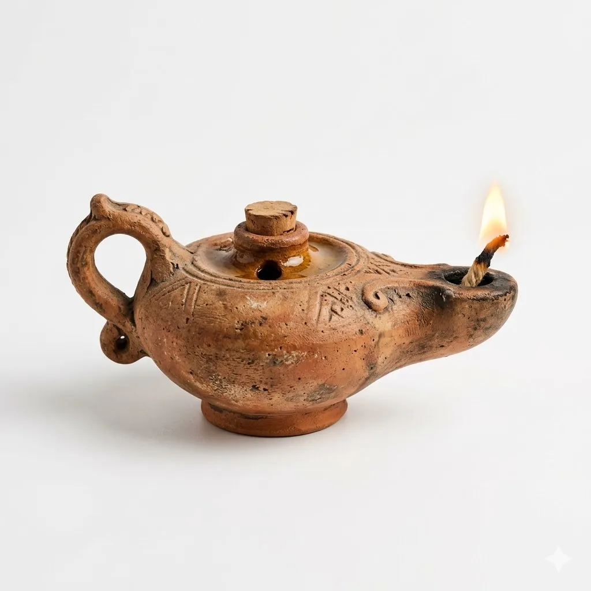

Riqueza de Carismas en la Región
Nuestra iglesia local en Maracaibo se enriquece profundamente con la labor silenciosa, apostólica y caritativa de numerosas comunidades masculinas y femeninas de vida consagrada.
Imparten educación formal y técnica, atención médica y de salud, cuidado a los ancianos desamparados y una profunda espiritualidad de oración. Conozca las comunidades y carismas que siembran la semilla del Evangelio a través de su testimonio y entrega en nuestra arquidiócesis.
Junta Directiva CONVER Maracaibo
Conferencia de Religiosos y Religiosas de Maracaibo
Presidente
Hno. José Manuel Burmes, FMS
Hermanos Maristas
Vicepresidenta
Hna. Neyda Rojas, RMM
Religiosas Mercedarias Misioneras
Secretaria
Hna. Enedina Araque, HN
Hermanas de Nazareth
Tesorero
Hno. Alirio Osorio, CMF
Misioneros Claretianos
Vocal I
P. José Luis Guillén, C.M.
Padres Paúles / Vicentinos
Vocal II
Hna. Flor Mélida González, OP
Dominicas de la Presentación
Vocal III
Hna. María Elena Bravo
Orden de las Vírgenes Consagradas
Buscador de Comunidades y Carismas
Comunidades Religiosas Masculinas
Padres Agustinos
Obra Local: Parroquia Perpetuo Socorro
Dirección: Av. 9B con calle 74, sector Tierra Negra. Maracaibo.
Teléfono: 0424-1354551
Comunidad:
- • P. Oswaldo José Matheus González (Vicario Parroquial)
- • Fray José Eleazar Vivas Vivas (Servicio de Pastoral)
Agustinos Recoletos
Obras: Parroquia Consolación (Bella Vista), Parroquia Santa Rosa de Lima (Altos de Jalisco), Parroquia San Onofre (Cc. La Paraguita).
Teléfono: 0412-3670531
Comunidad:
- • P. José Antonio Díaz Domínguez (Superior y Párroco de San Onofre)
- • P. Ricardo Riaño (Párroco de Consolación)
- • P. Adelmo Irene Bustamante (Párroco de Sta. Rosa de Lima)
- • P. Juan Carlos Fernández (Vicario de Sta. Rosa de Lima)
Orden de la Merced
Obras: Parroquia San Ramón Nonato (Monte Bello), Parroquia Ntra. Sra. de Fátima (18 de Octubre), Capilla Divina Misericordia.
Teléfono: 0414-3466396
Comunidad:
- • P. Ponc Antoni Capell Capell (Superior y Párroco de San Ramón)
- • P. Francisco Ortiz Bran (Párroco de Fátima)
- • P. Alejandro Rincón (Vicario de Fátima)
- • P. Rubén Arias Molero (Vicario de San Ramón)
Compañía de Jesús
Obra Local: Colegio Gonzaga
Dirección: Barrio San José, Av. 35 Los Postes Negros. Maracaibo.
Teléfono: 0412-8901601
Comunidad:
- • P. José Francisco Aranguren Díaz (Superior de Comunidad)
- • P. Gabriel de Jesús Sequera Herrera (Rector del Colegio Gonzaga)
- • P. Edwin Steven Fernández Gómez (Coordinador Pastoral IUSF)
Padres Rosminianos
Obras: Colegio Antonio Rosmini, Templo San Francisco de Asís (Milagro Norte), Rectoría San Antonio (Zapara), Ancianato Villa Serena.
Teléfono: 0412-7697073
Comunidad:
- • P. Pedro Enrique Paredes Ramírez (Superior)
- • P. Giovanni Pacheco Abreú (Rector de Templo San Francisco)
Misioneros del Sagrado Corazón
Obras: Parroquia Ntra. Sra. de la Paz (La Victoria), Liceo Ntra. Sra. del Sagrado Corazón, Parroquia La Santa Cruz.
Teléfono: 0412-1737628
Comunidad:
- • P. Yonys Rafael Mendoza Canelón (Párroco de La Paz y Director Liceo)
- • P. Thomas James Jordán (Vicario de La Paz)
- • P. John Edward Jennings Healy (Vicario de La Santa Cruz)
- • P. Eliel Araujo (Vicario de La Paz)
- • Hno. Deiby Gregorio Fuenmayor Valera (Animador Pastoral)
Sociedad de San Pablo
Obras locales: Parroquia San Judas Tadeo y Librería San Pablo. Maracaibo.
Teléfono: 0412-7128907
Comunidad:
- • P. Andrés Afanador (Año Pastoral)
Congregación de la Misión
Obra Local: Colegio San Vicente de Paul
Dirección: Av. 14A con calle 69, sector Tierra Negra. Maracaibo.
Teléfono: 0412-3751567
Comunidad:
- • P. José Luis Guillen Araujo (Superior)
- • Hno. Cruz Anselmo Castillo Sotelo (Encargado de Rectoría del Colegio)
- • Héctor Darío Tertad Marval (Seminarista)
Salesianos de Don Bosco
Obra Local: Centro Don Bosco, Guajira
Dirección: Sector El Cero, El Molinete. Municipio Guajira.
Teléfono: 0412-6199219
Comunidad:
- • P. Manuel Neto Vieira Coelho (Director)
- • P. Moisés Eduardo Meza Pérez (Pastoral de Comunidades)
- • P. José Antonio Vega Álvarez (Confesor y Apoyo)
- • Hno. Francisco José Niño Orta (Coordinador Pastoral Escolar)
Hermanos Maristas
Obra Local: E.T. Hermano Idelfonso Gutiérrez
Dirección: Calle 117 # 50-51A, Bello Monte. Maracaibo.
Teléfono: 0424-6782367
Comunidad:
- • Hno. Dorindo Burgo (Director del Colegio Chiquinquirá)
- • Hno. Ángel González (Pastoral Vocacional Nacional)
- • Hno. José Manuel Burmes (Coord. Nacional Pastoral Juvenil)
- • Hno. Duvan Correa (Profesor y Administrador)
Padres Escolapios
Obras: U.E.A. Nuestra Señora de Coromoto (Brisas del Sur) y Parroquia San Ignacio de Loyola (Barrio Los Andes).
Teléfono: 0412-0616901
Comunidad:
- • P. Jesús Manuel Vásquez Crespo (Superior)
- • P. Oscar de Jesús García (Párroco)
Misioneros Claretianos
Comunidad:
- • P. Ronald A. Ramírez Vargas (Superior)
- • Hno. Quiterio Izquierdo Huete
- • Hno. Alirio Osorio Monsalve
Comunidades Religiosas Femeninas
Carmelitas Descalzas
Obra Local: Monasterio La Natividad del Señor (Contemplativas)
Dirección: Av. 3 con Padilla, N° 92A-02, Santa Lucía.
Teléfono: 0424-6740449
Comunidad:
- • Hna. Dalba María de la S.F. Castillo (Vicaria)
- • Hna. Adriana Isabel de la S.T. Arellano (Novicias)
- • Hna. Nancy de la Cruz Romero Tovar (Sacristana)
Agustinas Recoletas Corazón de Jesús
Obras: Col. Inst. Carmela Valera, Casa Hogar Carmela Valera y Olla Solidaria.
Dirección: Calle 66A, entre Av. 10 y 11, sector La Estrella.
Teléfono: 0424-6423529
Comunidad:
- • Hna. Jeannette del Carmen Polanco (Superiora y Dir.)
- • Hna. María Jesús Serna Bermúdez (Capellanía y Pastoral)
- • Hna. Yelly Gabriela Planchez Mejías (Internista Casa Hogar)
Hermanas Ancianos Desamparados
Obra Local: Casa Hogar Santa Cruz Isidro
Dirección: Parroquia San Isidro. Maracaibo.
Teléfono: 0412-0614360
Comunidad:
- • Hna. Reyna Acuña (Superiora, Portería y Sacristía)
- • Hna. Ester Becerra (Vicesuperiora y Cocina)
- • Hna. María de los Ángeles Muñoz (Ecónoma y Enfermería)
- • Hna. Teresa Silva (Enfermera de Mujeres)
Carmelitas del Divino Corazón
Obras: Guardería Beata María de San José, Comedor de Abuelos, Dispensario Ntra. Sra. del Carmen.
Dirección: Barrio Sur América Av. 54A # 149-75. San Francisco.
Teléfono: 0424-6651676
Comunidad:
- • Hna. María Isabel Romero Romero (Superiora)
- • Hna. María Jesús Ojeda Saldivia (Directora Guardería)
- • Hna. Rosa Inés Cedeño Méndez (Coordinadora)
Misioneras del Divino Maestro
Comunidad:
- • Hna. Meidy Milagros Leal Bohórquez (Directora)
- • Hna. Josefina Coromoto Lara Rangel (Subdirectora)
- • Hna. Yaneth Carolina Vásquez Fajardo (Coordinadora Pastoral)
Hijas de la Sagrada Familia de Nazaret
Obras: Colegio Nazaret (Av. 16 con 77, 5 de Julio, Maracaibo) y Colegio Ntra. Sra. del Carmen (El Moján).
Teléfono: 0414-9673637
Comunidad:
- • Hna. Adriana V. Quintero Pelayo (Superiora Colegio Nazaret)
- • Hna. Enedina José Araque Soto (Superiora Col. El Moján)
- • Hna. Diana M. Hernández Díaz (Pastoral Colegio Nazaret)
- • Hna. María del Carmen Prado (Sacristana)
- • Hna. Rosa M. González Galvis (Secretaria y Mantenimiento)
Dominicas de la Presentación
Obras: Colegio La Presentación (Paraíso), U.E.P. Marie Poussepin (Sierra Maestra), Casa de la Misericordia.
Teléfono: 0424-6949532
Comunidad:
- • Hna. Carmen Celia Lara Olarte (Priora de la Comunidad)
- • Hna. Antonieta Camacho (Directora del Colegio)
- • Hna. Dulce Darelys Cabrera Pérez (Pastoralista)
Dominicas de Santa Rosa de Lima
Obra Local: Colegio Santo Domingo de Guzmán
Dirección: La Cañada de Urdaneta.
Teléfono: 0414-9785602
Comunidad:
- • Hna. Indira Carolina Laya Rodríguez (Madre Superiora)
- • Hna. Carmen Julia Villa Franco (Directora del Colegio)
- • Hna. Ylda Yamileth Mora Mora (Votos simples)
Esclavas de Cristo Rey
Obras: Colegio Javier (Sierra Maestra) y Colegio Cristo Rey (La Coromoto, San Francisco).
Teléfono: 0424-6561901
Comunidad:
- • Hna. Ligia María García Rojas (Madre Superiora)
- • Hna. Martha Libia Rodas Castaño (Subdirectora del Col. Cristo Rey)
- • Hna. María Nohemy Molina Ramírez (Coord. Pastoral del Col. Cristo Rey)
Hijas del Divino Salvador
Obras: Liceo Divino Niño y Escuela Arquidiocesana Monseñor Pedro Arnoldo Aparicio.
Dirección: Calle 162, Urbanización San Francisco.
Teléfono: 0424-6054240
Comunidad:
- • Hna. Carmen Sánchez (Superiora María Auxiliadora y Dir. Liceo)
- • Hna. Josefa Graciela Acosta (Superiora Divino Niño y Dir. Escuela)
- • Hna. María Julia Meléndez (Vicaria Comunidad M. Auxiliadora)
- • Hna. Delmy Paniagua (Vicaria Comunidad Divino Niño)
- • Hna. Martha Lorena Platero (Pastoral)
Hermanas Pobres de Maiquetía
Obra Local: Fundación Hogar San José de la Montaña (Adultos Mayores)
Dirección: Calle 85 Falcón, entre Av. 9B y 9C, Parroquia Bolívar.
Teléfono: 0412-1788233
Comunidad:
- • Hna. Eliseth Evelin Ríos Zapata (Directora)
- • Hna. Ana Rita Vergara (Enfermera de abuelos de 3era edad)
- • Hna. María Antonia Mora Mora
- • Hna. Eleticia Eleuteria Reyes Reyes
Mercedarias Misioneras
Obra Local: Colegio La Merced
Dirección: Esquina Bella Vista con Av. Universidad. Maracaibo.
Teléfono: 0414-6383634
Comunidad:
- • Hna. Gisela Ángela López Urdaneta (Madre Superiora y Ecónoma delegación)
- • Hna. Neyda Yolet Rojas Moreno (Secretaria delegación y Coord. Pastoral)
Misioneras Agustinas Recoletas
Obra Local: Colegio Santa Rita
Dirección: Sabaneta calle 100, Av. 21. Maracaibo.
Teléfono: 0414-6720423
Comunidad:
- • Hna. Margarita Consolación Ruiz Colmenarez (Superiora)
- • Hna. Delis Coromoto Romero Fernández (Directora del Colegio)
- • Hna. María Lucelia Ramírez Cardona (Docente Bibliotecaria)
- • Hna. Wenderlyng Yennicol Reyes López (Votos temporales)
Misioneras de Cristo Jesús
Obras: Pastoral infantil, recuperación nutritional, protección de NNA.
Dirección: Barrio Etnia Goajira, Av. 107 # 55-105. Maracaibo.
Teléfono: 0412-3938935
Comunidad:
- • Hna. Jeannette Makenga (Superiora)
- • Hna. Indira Raona (Trabajo Social y Pastoral)
Religiosas Oblatas al Divino Amor
Comunidad:
- • Hna. María Leonor Ramírez Velandia (Madre Superiora)
- • Hna. Martha Eugenia Vargas Arley (Directora del Colegio)
Hnas. de la Providencia Rosminianas
Obras: Colegio Antonio Rosmini y Escuela Los Pescadores.
Dirección: Av. Milagro Norte. Maracaibo.
Teléfono: 0414-7325900
Comunidad:
- • Hna. María Victoria Romero Romero (Madre Superiora)
- • Hna. Maritza Delgado
- • Hna. Angela Schiavi
- • Hna. María Yudita Barison
Derecho Diocesano, Seculares y Otras
Instituto Evangelizador Mariano
Obra Local: U.E.P. Arquidiocesana Madre Laura
Dirección: Barrio el Callao, calle 170, Av. 49H. San Francisco.
Teléfono: 0424-6019984
Comunidad:
- • Hna. Karina Milagros Fuenmayor Arenas (Madre Superiora)
- • Hna. Milagros del Valle Gutiérrez Reyes (Hermana)
Ermitañas Eucarísticas de V.M. y S.J.
Obra Local: Colegio Arq. Santo Domingo de la Calzada
Dirección: Km 48 Vía Perijá, Azarajito. Cañada de Urdaneta.
Teléfono: No disponible
Comunidad:
- • Hna. Marlene Antonia López Gutiérrez (Votos Solemnes)
- • Hna. Lutmila Margarita Cabrera Ochoa (Votos Solemnes)
- • Hna. Iraliz del Carmen Morales Hurtado
Hijas del Corazón Inmaculado de María
Obras: UEPA Ntra. Sra. de las Mercedes (Las Mercedes) y UEA Colegio San Rafael (Los Robles).
Teléfono: 0424-6938441
Miembros:
- • Hna. Mayerling Aisbel Moreno González (Madre Superiora)
- • Hna. Jesse Nikyoly Castro Hernández
- • Hna. Yusnaidy María Díaz Córdova
- • Hna. Dianelis Coromoto Alcántara Chourio
- • Hna. Sindy Carolina García Lugo
- • Hna. Yubisay María Díaz Córdova
Comunidad Jesús el Señor
Obra Local: Cáritas Parroquial
Dirección: Urbanización La Trinidad Av. 15H. Maracaibo.
Teléfono: 0412-6006981
Comunidad:
- • Hna. Nancy Margarita Vera Flores
- • Hna. Amarilys Coromoto Ibarra
Orden de las Vírgenes Consagradas
Obras: Apostolado en Parroquia Santísimo Sacramento (Las Lomas) y Capilla del Hospital Madre Rafols (Circunvalación #2).
Teléfono: 0414-3621291
Consagrada:
- • Hna. María Elena Bravo Velásquez (Servicio de Pastoral)
¿Sientes el llamado?
La vida consagrada es una respuesta de amor radical. Si deseas conocer más sobre estas comunidades o discernir tu vocación, estamos para acompañarte.